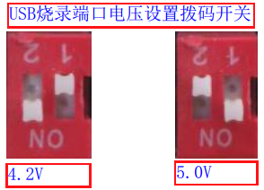

2.9. Programming Voltages for Different Chips
2.9.1. Chip programming voltages and settings
Programming voltages for different chips
The programming voltage of a device's chip may differ depending on the chip model and the hardware circuit design. Be sure to confirm the correct programming voltage for the device's chip before programming; otherwise, an excessive programming voltage may cause programming errors or damage the chip.
Programmer USB port voltage setting
For the V.12 programmer, the USB programming port voltage can be set by adjusting the voltage level as shown in USB port voltage setting on the V1.2 programmer. If the required voltage cannot be reached by adjustment, consult a Jieli engineer about replacing the voltage conversion module component with one for the required voltage, or use an external module for the voltage conversion.

USB port voltage setting on the V1.2 programmer
For the V2.0 programmer, you can set the required USB programming port voltage with the corresponding option in the PC tool's screen for updating the target chip firmware. The PC tool has a default USB port programming voltage configured for each chip model, which can generally be left at the default without being set again.
2.9.2. Programming devices with VBAT and VDDIO shorted
When programming a device whose VBAT and VDDIO pins are shorted together, the programmer's USB programming port voltage must be 3.3V; otherwise, programming errors may occur or the chip may be damaged.
On the V1.2 programmer, a voltage conversion module can be used to convert 5V to 3.3V. For the conversion and wiring, see Programming wiring for a device with the VBAT and VDDIO pins shorted;
Programming wiring for a device with the VBAT and VDDIO pins shorted
On the V2.0 programmer, you can directly set the USB programming port voltage to 3.3V in the PC tool.
2.9.3. Programming voltage for each chip model
The following table lists the programming voltage required for each chip model.
No. |
Chip model |
Programming voltage (烧录电压) |
|---|---|---|
1 |
AC521X, device chips with the VBAT and VDDIO pins shorted |
3.3V |
2 |
AC637N, AC897N, AC899N, AD697N, AD699N, AC698N, AD698N, AC700N |
4.2V |
3 |
AC61N, AC62N, AC63N, AC64N, AC630N, AC631N, AC6083, AC635N, AC695X, AC693X, AC608N, AC636N, AC696X, AC694X, AD13N/AD14N/1D15N, AD200, AC790N |
4.8V |
4 |
AC690X, AC692X |
5.0V |